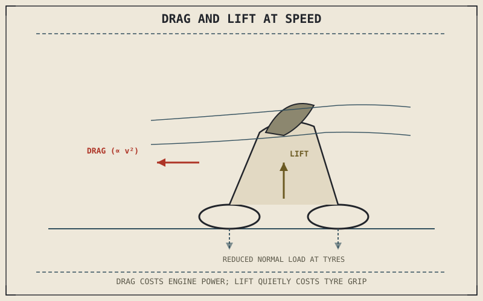

Every chapter in this part so far has treated the motorcycle and rider as if they existed in a vacuum, with only the tyres and gravity involved. That approximation quietly breaks down as speed climbs, because air isn't nothing — it's a fluid the motorcycle is constantly pushing out of the way, and that pushing costs real, measurable force that grows dramatically as speed increases.
Chapter 8.6 closed by naming aerodynamics as the next force category this part hasn't yet accounted for. This chapter is that accounting.
Drag: The Force That Grows With the Square of Speed
Aerodynamic drag is the resistance force air exerts opposing a motorcycle's forward motion, and it grows with the square of speed — doubling speed doesn't double drag, it roughly quadruples it, which is why high-speed fuel consumption and the engine power needed just to maintain speed both rise so steeply at higher velocities. Drag depends on the motorcycle and rider's frontal area and shape, which is exactly why a sportbike's fairing and a rider's tucked riding position exist: reducing frontal area and smoothing airflow directly reduces the drag force the engine has to overcome, a genuine, physical performance factor rather than a cosmetic styling choice.
Lift: An Unwanted Consequence of the Same Airflow
Air flowing over and under a motorcycle's bodywork at speed can generate lift, the same aerodynamic principle that keeps an aircraft wing airborne, and on a motorcycle, that lift is almost always unwanted — it reduces the normal load pressing the tyres into the road, directly shrinking the friction circle Chapter 6.4 established governs available grip, at precisely the high speeds where stability matters most. This is why some sport and touring motorcycles incorporate small aerodynamic elements, sometimes called winglets, specifically designed to generate downforce instead — a deliberately reversed use of the same lift-generating airflow, aimed at increasing tyre load rather than reducing it.
Drag and lift are two consequences of the same airflow a motorcycle and rider push through at speed — one costs engine power directly, the other quietly reduces the tyre load and grip this entire book has spent seven parts building up.

A motorcycle and rider shown at speed with drag force opposing forward motion labeled proportional to speed squared, and lift force shown reducing the normal load pressing the tyres into the road.
A Common Misconception, Cleared Up Early
It's easy to assume aerodynamics only matters for racing motorcycles chasing outright top speed, since drag and lift both sound like extreme-speed concerns. Drag's speed-squared relationship means it becomes a genuinely significant force well below racing speeds, meaningfully affecting fuel consumption, engine load, and rider fatigue from wind pressure on any motorcycle sustaining highway speed for extended periods — this is a real factor in ordinary touring, not just a racetrack consideration. Lift becomes significant later, at speeds most riders rarely sustain, but drag has been quietly working against every motorcycle on every highway ride all along.
Where This Leads
Drag and lift explain steady aerodynamic forces at constant speed, but air can also act on a motorcycle unevenly — gusts, passing trucks, and turbulence disturb that airflow in ways that directly affect stability. Chapter 8.8 turns to that next.
Key Concepts to Remember
- Aerodynamic drag grows with the square of speed, meaning doubling speed roughly quadruples the resistance force the engine must overcome.
- Aerodynamic lift reduces tyre normal load at speed, shrinking the friction circle exactly when high-speed stability matters most.
- Fairings, tucked riding positions, and winglets are genuine aerodynamic engineering responses to drag and lift, not purely cosmetic design choices.
Cross-References
| ← Ch. 8.6 | Closed by naming aerodynamics as the next unaccounted force category; this chapter delivers that accounting through drag and lift. |
| ← Ch. 6.4 | Established the friction circle's dependence on normal load; this chapter shows aerodynamic lift directly reducing that load at speed. |
| → Ch. 8.8 | Covers aerodynamic stability and buffeting from gusts and turbulence, extending this chapter's steady-state drag and lift discussion. |